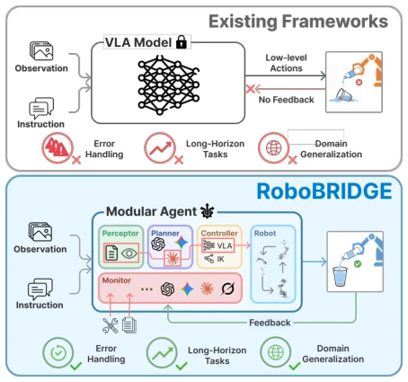
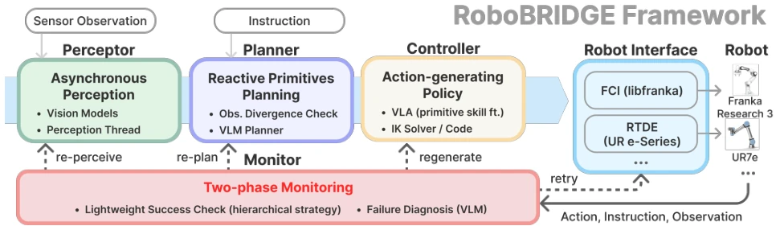
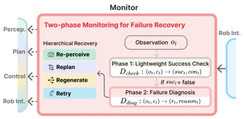
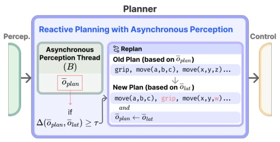
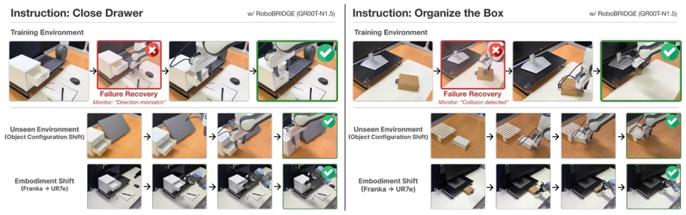
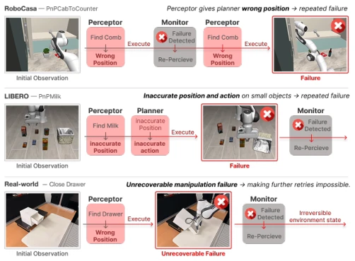

VLA models are currently gaining immense popularity, but like a student who can solve problems but cannot take exams, they collapse when encountering unexpected situations. The ROBOBRIDGE team is quite clever; instead of competing on model parameters, they developed a 'wrapper' framework. It wraps the VLA, adds monitoring, planning, and perception modules, forcibly endowing it with Agent capabilities. The trick of LoRA fine-tuning skill primitives is quite practical, saving the trouble of retraining large models, decomposing operations into domain-invariant primitives such as MOVE, GRIP, etc. However, relying on an external LLM for monitoring, who bears the latency and cost? Also, for contact tasks that are completely failed, the framework cannot save it. Overall, it is a pragmatic middleware, not magic, but it indeed solves the pain point of 'policy does not equal agent'.
VLA models are strong as action predictors, but fall far short as robot agents (Agents). Existing VLA deployments are open-loop; once grasping fails or the environment changes, errors cascade and amplify [5]. Although some have done failure detection [7], replanning [9], or self-correction [10], they are all patches for specific scenarios, lacking a unified framework. Just like early LLMs could only generate text, later they became Agents with tool calling and planning. What the robotics field lacks is not better policies, but an orchestration layer that can turn any policy into a reliable agent. Existing solutions often assume specific environments or architectures and cannot be generalized. ROBOBRIDGE attempts to fill this gap, emphasizing policy-agnosticism.

Fig. 1. Existing VLA deployments execute actions in an open-loop manner and lack mechanisms for error handling, long horizon consistency, and domain generalization. ROBOBRIDGE wraps an action generating policy with modular perception, planning, monitoring, and robot interface components to close the loop with feedback and enable robust execution.
The framework contains five modules: Monitor, Perceptor, Planner, Controller, Robot Interface. In terms of data flow, Perceptor asynchronously updates scene state, Planner generates primitive sequences, Controller executes actions, Monitor provides closed-loop feedback. Innovations include: 1. Two-stage monitoring, first lightly check success or failure, after failure diagnose and choose one of four recovery strategies: retry, regenerate, replan, or re-perceive, avoiding full restart. 2. Asynchronous perception and reactive planning, perception thread runs independently, only triggering replanning when environment state deviation from plan exceeds threshold, reducing computational waste. 3. LoRA fine-tuning for VLA, decomposing operations into domain-invariant primitives such as MOVE, GRIP, different primitives load different adapters, reducing domain shift sensitivity. Controller supports policy switching, even compatible with IK controllers. This modular design makes the framework policy-agnostic, capable of adapting to multiple VLA backbones.

Fig. 2. Overall framework of ROBOBRIDGE. The Perceptor updates an object centric scene state asynchronously, and the Planner generates reactive primitive skills with divergence triggered replanning. The Controller executes primitives with an action generating policy, while the Robot Interface abstracts robot specific APIs. A two-phase Monitor performs success checking and failure diagnosis, invoking hierarchical recovery such as retry, regenerate, replan, and re-perceive.

Fig. 3. Two-phase monitoring for failure recovery. A lightweight success check flags failure, then a diagnosis module selects a hierarchical recovery action from retry to re-perceive.

Fig. 4. Reactive planning with asynchronous perception. The perception thread continuously updates a thread-safe buffer with the latest detection result. Replanning is triggered when the environment diverges materially from the current plan. This design preserves the high-level action sequence while regenerating subsequent primitive skills to reflect the current state.
Tested on LIBERO and RoboCasa simulations and real Franka/UR7e robots. Baseline comparison of standalone VLA vs. ROBOBRIDGE wrapped effect, tested three backbones: SmolVLA, π0.5, GR00T-N1.5. Metric is Success Rate (SR). In RoboCasa, average success rate improved from 3.7% to 7.5%, long horizon task improvement is significant. Ablation experiments show monitoring module relies heavily on LLM capabilities, Claude Opus improvement is most significant. Real-world testing proves framework can transfer across environments, but perception occlusion and unrecoverable contact remain main failure modes. Framework performs stably on multiple VLA backbones, verifying generalizability.

Fig. 5. Real-world execution traces with ROBOBRIDGE (GR00T-N1.5 controller). Each task is shown in the training environment (top) and an unseen environment (bottom). The Monitor detects execution failures and triggers recovery during rollout (red boxes), enabling the agent to resume progress and complete the task (green boxes). The same monitoring and recovery behavior transfers across environment changes without additional adaptation.

Fig. 6. Observation of two dominant failure modes (perception errors and unrecoverable manipulation failures) in simulation and real-world. These cases highlight the need to improve reliability by strengthening perception robustness under occlusion and introduction of explicit verification and validation for contact rich behaviors.